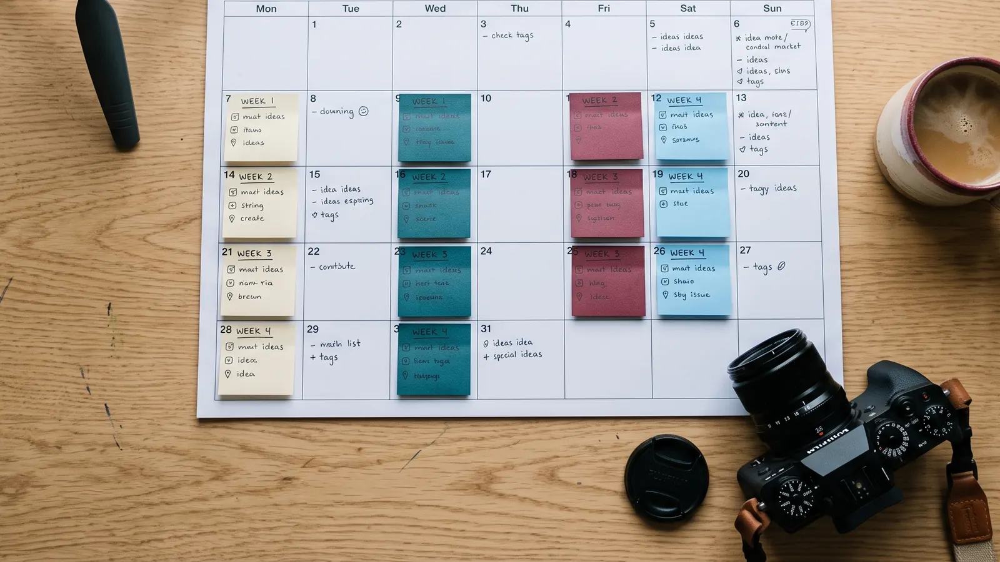

Pillar workshop
One working session to set your content pillars, your audience and your voice.
Social Media
We figure out what your business should be known for, build a calendar around your busy and slow seasons, create the posts, and track what actually brings people through the door.

Social media marketing at Full Plate starts with a plan, not a post. We set your content pillars, plan a calendar around your season, create and schedule your posts, answer comments and messages, and report on what turns into real customers. We're based in Kill Devil Hills on the Outer Banks and work with businesses across North Carolina and Virginia.
A post goes up on a slow Tuesday. Then nothing for three weeks. Then five in a row before a big weekend. Followers can't tell what you stand for, and you can't tell whether any of it is working.
Posting more isn't the fix. Posting with a plan is. When every post ties back to a few clear messages, aimed at the right people at the right time, social stops being a chore and starts bringing people in.
Our method
This is the process behind every account we run. It's methodical on purpose.
We decide the three to five things your business should be known for. Every post supports one of them. For a coffee shop, that might be the people behind the counter, what's new on the menu, life on the island, and why locals keep coming back.
We get clear on who we're talking to. Locals and visitors behave differently, and so do first-timers and regulars.
We plan each month around your season. Busy weekends, slow weeks, holidays, events and launches all get a spot before the month starts.
Photos, short videos and captions in your voice. We shoot what we can and make the most of what you already have.
Posts go out on schedule. Comments and messages get answered, because a question left unanswered is a customer lost.
We track what brought in calls, bookings, messages and visits, not just likes.
Every month we keep what worked, drop what didn't, and tune the next calendar.
What's included
One working session to set your content pillars, your audience and your voice.
Planned ahead around your season and approved by you before it starts.
Photos, short video, graphics and captions made for each platform.
Posts go out on time on the platforms that fit your business.
Questions get answered while the customer is still interested.
A plain-English summary of what brought in customers and what we're changing.
Want to see what your pillars could be? Book a free Kitchen Check
Someone comments asking if you're open Sunday. Someone sends a message about pricing. Those are customers raising their hand. We make sure they get an answer, and when it makes sense, they land in the same inbox and follow-up system as your calls and website forms. That's where social meets customer experience.
We don't publish prices, because every business starts in a different place. We meet you where you are and build from there. These are the things that shape the investment:
The Friday scoreboard
Every Friday you get a one-page report showing what came in and where it came from. Readable in two minutes, so you always know what you're paying for.
The ones your customers actually use. For most local businesses that means Facebook and Instagram, plus posts on your Google Business Profile. Some businesses fit TikTok, LinkedIn or Pinterest. We would rather do two platforms well than five poorly, and we recommend based on who you are trying to reach.
No, but it helps. People connect with faces, so posts with you or your team tend to do well. If you would rather stay behind the camera, we build your content around your space, your work, your customers and your community instead.
It depends on your goals and your season. Most local businesses do well with three to five posts a week on their main platform. We plan more around busy season and events, and we never post just to fill a slot on the calendar.
Yes. You see the monthly calendar before it starts and can ask for changes. Once you trust the rhythm, many owners switch to a quick weekly review. Either way, nothing goes up that you wouldn't say yourself.
Every month you get a short report in plain English. It covers reach and engagement, but more importantly the calls, messages, bookings and website visits that came from social. If something isn't working, we tell you and change it.
We use it where it helps, like brainstorming ideas, drafting captions and resizing posts for each platform. A person reviews everything, and your voice comes first. We never post fake images of people pretending to be your customers or your staff.
About an hour. A quick check-in on what's coming up, like events, specials or new services, plus approving the calendar. If we are capturing photos or video, we schedule a short shoot that works around your busy times.
The first month is about setup and finding a rhythm. Most businesses see steadier engagement within two to three months. Real business results, like more calls or bookings from social, build over time as people see you show up consistently.
Yes. Regular posts build trust with people who already follow you. Paid ads reach people who don't know you yet. We often pair the two, especially before busy season. Our lead generation service covers how we plan, run and track paid ads.
No pitch and no obligation. If you just want a sounding board for your business, we're happy to be that. Honestly, these are some of our favorite conversations.
Book a free Kitchen CheckOr call us at (252) 256-7046.